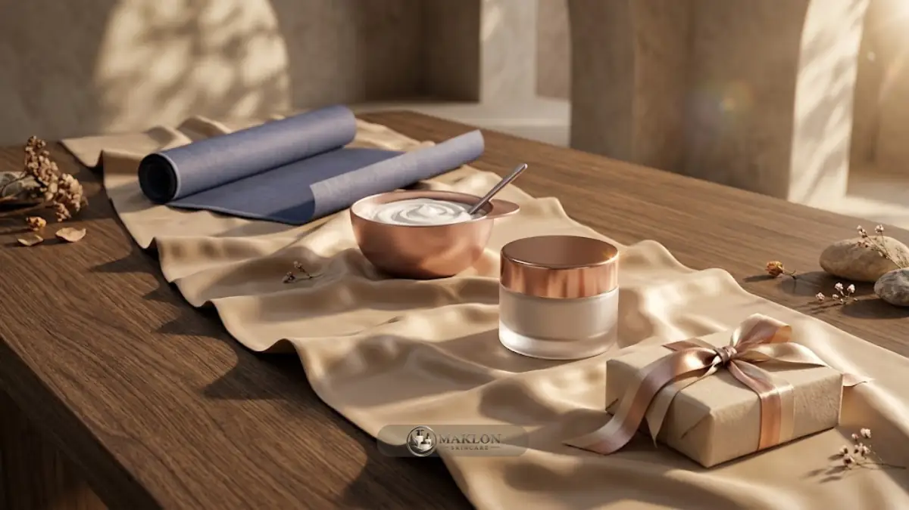

Timeline produksi OEM/ODM skincare umumnya berlangsung beberapa bulan, mencakup pengembangan formula, uji stabilitas, notifikasi BPOM, produksi massal, dan pengiriman.
- Notifikasi BPOM berlaku tiga tahun, sehingga jadwal pembaruan perlu masuk perencanaan jangka panjang.
- BPOM mencatat 118.197 notifikasi kosmetik pada 2025, sehingga volume pengajuan nasional sangat tinggi.
- ODM umumnya lebih cepat daripada OEM karena formula dasar sudah tersedia.
- Estimasi pada artikel ini bersifat ilustratif; jadwal nyata bergantung pada pabrik dan kesiapan dokumen.
Berapa Lama Total Proses OEM/ODM Skincare?
Total proses OEM/ODM skincare dari perumusan brief awal hingga produk siap jual umumnya memakan waktu beberapa bulan.
Durasi pengerjaan ini sangat bergantung pada kompleksitas formula, kesiapan dokumen legalitas pemohon, serta antrean produksi pabrik maklon.
Sebagai gambaran ilustratif, proyek maklon skincare ODM dengan dokumen siap dapat selesai dalam kisaran empat hingga enam bulan.
Sedangkan proyek maklon skincare OEM dengan formula custom eksklusif dapat membutuhkan enam bulan atau lebih.
Angka estimasi waktu ini bukan janji mutlak dan dapat bervariasi bergantung pada dinamika pengujian sediaan di lapangan.
Gunakan angka tersebut sebagai bahan diskusi terarah bersama manajemen pabrik rekanan Anda.
Mintalah jadwal kerja tertulis lengkap dengan tanggal target untuk tiap fase, lalu tambahkan waktu cadangan pada tahap yang paling berisiko.
Apa Saja Fase dalam Timeline Produksi OEM/ODM?
Fase utamanya adalah riset dan brief, pengembangan sampel, uji stabilitas laboratorium, notifikasi izin edar BPOM, pengadaan kemasan, produksi massal, dan pengiriman ke gudang brand.
| Fase Produksi | Perkiraan Umum (Ilustratif) |
|---|---|
| Riset dan brief konsep | 2 sampai 4 minggu |
| Sampel formula ODM | 2 sampai 6 minggu |
| Sampel formula OEM custom | 1 sampai 3 bulan |
| Uji stabilitas awal | 1 sampai 3 bulan |
| Notifikasi resmi BPOM | Mengikuti proses di sistem BPOM |
| Pengadaan botol & kemasan | 3 sampai 8 minggu |
| Produksi massal pabrik | 2 sampai 6 minggu |
Beberapa fase proses dapat berjalan secara paralel, misalnya pemesanan kemasan bersamaan dengan tahapan uji stabilitas formula.
Tabel perkiraan waktu di atas disajikan sebagai panduan umum industri dan bukan merupakan standar operasional yang mengikat.
Berapa Lama Tahap Riset dan Brief Produk?
Tahap riset dan brief umumnya memakan dua hingga empat minggu bila konsep produk, target konsumen, dan anggaran sudah jelas sebelum berdiskusi dengan pabrik.
Kecepatan pada fase ini sangat ditentukan oleh kesiapan internal pemilik brand kosmetik itu sendiri.
Brand yang belum menentukan target pasar sering menghabiskan waktu lebih lama karena brief produk berulang kali berubah di tengah diskusi.
Siapkan acuan tekstur referensi, batas anggaran modal per botol, serta rincian zat aktif yang diinginkan atau wajib dihindari.
Lembar brief formula yang tertulis rapi mempercepat transisi menuju tahap pencampuran sampel di lab.
Pelajari panduan checklist teknis proyek OEM/ODM untuk menyusun parameter brief yang lengkap dan terstruktur.
Berapa Lama Pengembangan Sampel dan Revisi Formula?
Pengembangan sampel sediaan ODM umumnya lebih singkat karena basis formula siap pakai sudah tersedia di katalog formularium pabrik.
Sebaliknya, racikan formula OEM custom membutuhkan beberapa putaran revisi yang dapat memakan waktu satu hingga beberapa bulan kerja.
Setiap putaran revisi mencakup peracikan sampel, pengiriman contoh fisik, evaluasi brand, lalu penyesuaian ulang di lab.
Batasi batas maksimal jumlah revisi formula di dalam kontrak maklon agar proses manufaktur tidak berkepanjangan.
Putuskan kriteria persetujuan sampel secara objektif: stabilitas tekstur emulsi, aroma wewangian, warna sediaan, dan performa daya serap di kulit.
Pemilik brand yang cepat memberi umpan balik biasanya menghemat waktu yang sangat signifikan dalam pengembangan produk.
Simpan botol sampel yang disetujui (golden sample) sebagai acuan baku saat pengujian batch produksi massal.
Berapa Lama Uji Stabilitas?

Uji stabilitas awal umumnya memakan satu hingga beberapa bulan waktu pengamatan laboratorium secara berkala.
Produk sediaan perlu diamati pada berbagai kondisi suhu penyimpanan untuk menilai ketahanan warna, kejernihan aroma, kestabilan pH, dan tekstur formula.
Durasi sebenarnya ditentukan oleh pihak pabrik atau laboratorium uji berdasarkan protokol resmi dan klaim masa simpan (shelf life) yang diajukan.
Data uji awal (accelerated stability) dapat dipakai untuk melanjutkan proses administrasi perizinan, sementara pengamatan jangka panjang terus berlanjut setelah produk beredar.
Jangan pernah memotong tahap pengujian stabilitas ini semata-mata demi mengejar target seremonial peluncuran.
Produk yang berubah warna, berbau apek, atau memisah di tangan konsumen akan merusak reputasi merek dan memicu kerugian retur massal.
Berapa Lama Proses Notifikasi BPOM?
Lama proses notifikasi BPOM mengikuti proses evaluasi di sistem resmi BPOM serta tingkat kelengkapan dokumen pemohon.
Lakukan pemeriksaan status berkas pengajuan secara berkala di portal kosmetik BPOM dan selalu siapkan waktu cadangan yang memadai.
Data mencatat ada 118.197 notifikasi kosmetik yang terdaftar pada 2025 menurut laporan GoodStats, sehingga volume pengajuan secara nasional tergolong amat padat.
Dokumen yang tidak lengkap, perbedaan penulisan komposisi, atau rancangan label yang belum patuh akan memperlambat proses verifikasi.
Pastikan identitas badan usaha pemohon notifikasi, susunan daftar bahan baku, dan narasi klaim khasiat sudah konsisten sebelum pengajuan.
Pakar akademisi UGM menyebutkan bahwa izin notifikasi kosmetik berlaku selama tiga tahun penuh sejak terbit.
Catat tanggal berakhirnya izin edar tersebut dan siapkan proses perpanjangan sebelum masa berlaku habis agar operasional distribusi penjualan tidak terhenti.
Berapa Lama Pengadaan Kemasan dan Produksi Massal?
Pengadaan kemasan umumnya memakan tiga hingga delapan minggu dan produksi massal berkisar antara dua hingga enam minggu pengerjaan.
Jangka waktu ini sangat bergantung pada tingkat kustomisasi wadah, ketersediaan bahan baku aktif, serta antrean lini pengisian di pabrik.
Kemasan custom, seperti wadah botol dengan sablon khusus atau kardus bertekstur laminasi mewah, membutuhkan durasi cetak yang lebih lama.
Sebaliknya, pilihan kemasan stok siap pakai umumnya tersedia lebih cepat meskipun dari segi diferensiasi visual terasa kurang unik.
Menurut pemaparan Kementerian Perindustrian pada Mei 2026, pasokan bahan baku industri kosmetik nasional masih sekitar 80 persen mengandalkan impor.
Ketergantungan impor ini dapat memengaruhi ketersediaan pasokan bahan baku tertentu dan menambah waktu tunggu pengiriman.
Lakukan pemesanan bahan baku dan kemasan primer jauh-jauh hari guna menjaga kesinambungan siklus produksi sediaan.
Faktor Apa yang Paling Sering Memperlambat Timeline?
Faktor yang paling sering memperlambat timeline adalah lembar brief konsep yang berubah-ubah, dokumen legalitas tidak lengkap, dan revisi formula sampel yang berulang kali.
Keterlambatan pengiriman bahan kemasan botol dan kepadatan antrean kapasitas lini pabrik juga kerap menjadi kendala utama.
Faktor penghambat tambahan meliputi proses persetujuan draf label yang lambat, kelangkaan stok bahan baku impor, serta perbedaan ekspektasi mutu antara pemilik brand dan pabrik.
Langkah mitigasinya adalah menjadwalkan komunikasi rutin, menetapkan satu penanggung jawab (PIC) utama dari tiap pihak, dan mendokumentasikan setiap nota persetujuan secara tertulis.
Pelajari kembali ulasan mitos vs fakta seputar OEM/ODM skincare agar ekspektasi waktu produksi Anda sejak hari pertama tetap rasional.
Sinkronkan pula jadwal peluncuran produk dengan perencanaan terarah pada panduan strategi pemasaran digital dan distribusi.
Bagaimana Cara Mempercepat Timeline Tanpa Mengorbankan Mutu?
Percepat timeline proyek Anda dengan memilih opsi formula ODM yang telah matang dan menyiapkan kelengkapan dokumen perizinan sejak hari pertama.
Jalankan fase-fase yang dapat dikerjakan secara paralel, batasi putaran revisi sampel, dan tunjuk satu pengambil keputusan final di pihak internal brand Anda.
Contoh eksekusi paralel meliputi memesan bahan kemasan saat uji stabilitas formula sedang berjalan di lab, serta merancang aset pemasaran saat menanti nomor notifikasi BPOM terbit.
Hindari memangkas waktu uji stabilitas laboratorium dan pemeriksaan kendali mutu produk karena risikonya sangat fatal bagi keselamatan konsumen dan reputasi brand.
Konsultasikan Jadwal Produksi Brand Skincare Anda
Ingin memulai brand skincare dengan timeline produksi yang terukur, kepatuhan CPKB terjamin, dan pendampingan izin BPOM resmi? Diskusikan rencana produk, formulasi sampel, serta pilihan paket produksi bersama tim kami melalui layanan konsultasi maklon skincare hari ini.
Kesimpulan: Disiplin Timeline untuk Kesuksesan Maklon
Timeline produksi OEM/ODM skincare perlu direncanakan secara disiplin per fase, dengan alokasi waktu cadangan, jadwal tertulis yang jelas, dan pemahaman bahwa uji stabilitas serta perizinan BPOM tidak bisa dipaksakan instan.
- Mintalah lembar jadwal tertulis per fase dari pihak pabrik maklon rekanan Anda.
- Jalankan tahapan operasional yang memungkinkan secara simultan atau paralel.
- Lakukan pemesanan material kemasan dan pasokan bahan baku lebih awal.
- Catat tanggal berakhirnya nomor notifikasi BPOM untuk persiapan pembaruan tepat waktu.
Catatan: Estimasi durasi pada artikel ini bersifat panduan umum dan ilustratif. Selalu konfirmasikan rincian jadwal produksi nyata bersama pihak pabrik maklon dan regulasi BPOM terkini.